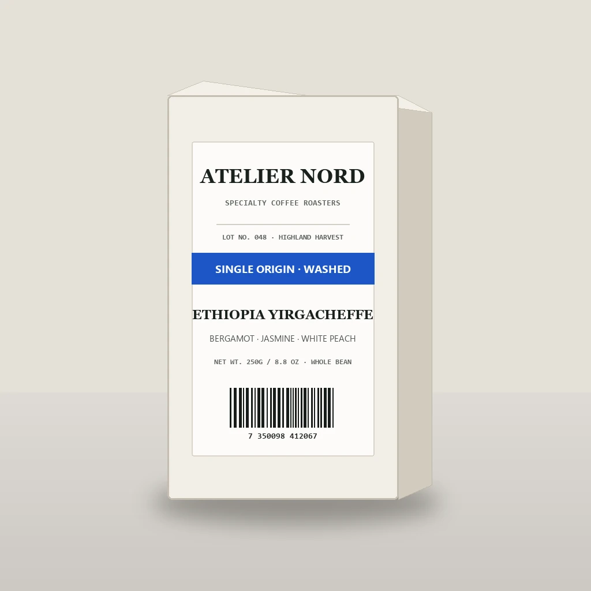

MAI-Image-2.7 商业图像编辑实测工作台：BRF 4.17 领跑指令执行，Flash 成本效率达竞品 3.8×–8.7×
基于 Microsoft Foundry 实跑封存的 121 次生产级 API 调用（总花费 $6.041，SHA-256 全链路锁死），横向对比 8 款主流商业图像编辑模型 × 12 类 1024×1024 真实商业修图场景（人像祛痘/证件照/追色、商品换底/包装改色/换季、SaaS 横幅/金融 App UI/吉祥物/Logo 去噪、S11 原生 4 通道 RGBA 透明抠图、S12 双层路由与中英双语指令扰动）。全程零外部 CDN 依赖。
12 大商业修图场景 × 8 模型像素级分屏对比
拖拽画面中央分割线对比 1024×1024 原图与模型输出；移动鼠标实时联动下方 2.5× 局部放大镜核验微字号、条形码与皮肤毛孔。


MAI-Image-2.7 与 2.7-Flash 精准锁定非编辑区像素与微字号，而单张固定成本仅 $0.035 / $0.010。在整图换底（S04/S06）中，若对瓶身折射有零漂移要求，建议前置一层原生 RGBA Alpha 蒙版锁死主体。
当前场景 8 模型同屏横评画廊（点击任意卡片载入主分屏器）
全部 8 款模型在同一 SHA-256 锁定 1024×1024 输入与相同英文商业 Brief 下的真实输出与盲评打分。
S11 原生 4 通道 RGBA 透明抠图检验台（真 Alpha 透底 vs 假 RGB 棋盘格）
切换下方实时 CSS 背景底板：真正具备 4 通道 Alpha 的图像（MAI-Image-2.7 / Flash / OpenAI GPT Image）会无缝透出翡翠绿或赤陶底色；而 FLUX.2-pro / flex 将灰白棋盘格画死在不透明 RGB 像素中（Alpha=0%），前代 MAI-Image-2.6 请求 background="transparent" 直接返回 HTTP 400。
S12 双层路由工作流：MAI-Flash ($0.010) 探索 → MAI-2.7 ($0.035) 暖光精修 = $0.045
模拟电商与品牌内容中心真实的多轮对话改稿：Turn 1 将摄影棚黑金咖啡罐摆上极简咖啡馆木吧台，Turn 2 在保持构图的同时切换为黄昏钨丝暖光。
CNS ≤ 3，无人拿到无掩码零返工直通）。因此企业最佳实践是：用 MAI-2.7-Flash ($0.010) → MAI-Image-2.7 ($0.035) 承担场景探索与光影定稿（较双轮 Sunburst $0.1226 降本 63.3%、提速 42.1%），并在合成层回贴 Turn 0 原生 RGBA 产品/文字蒙版，实现 100% 商标零篡改！
| 双轮工作流 (Turn 1 → Turn 2) | 两轮总成本 | 较双轮 Sunburst 节省 | 两轮总耗时 | Turn 2 得分 (BRF/VEQ/CNS) | Turn 1→2 场景结构 SSIM | Turn 0→2 罐体区域 SSIM |
|---|
中英双语商业 Brief 等价扰动实测（4 场景 × 4 代表模型 = 16 组对照）
检验亚太设计团队直接用简体中文下发修图指令时的性能保持率：MAI-Image-2.7 与 2.7-Flash 实现 4/4 (100%) 稳定通过，而 FLUX.2-pro 在中文 S01 人像祛痘任务中漏修瑕疵（总分从 100.0 暴跌至 33.4，-66.6 pts；BRF 从 5 跌至 1，约 -60+ 分级断崖）。
| 测试场景 | 模型 | 英文原版百分制 | 中文 Brief 百分制 | 分差波动 (PTS) | 非编辑区 SSIM (EN → ZH) | 中文商用判定 |
|---|
Pareto 成本—质量前沿散点图（Summary JSON 实时驱动）
横轴为单张 1024×1024 实测均价（越靠左越省钱），纵轴为 ServImage 三维均分；虚线外环代表支持原生 4 通道 RGBA 透明输出。
每 $1 预算产出的零返工合格商业图（Accepted Edits / $1）
MAI-Image-2.7-Flash ($0.010 固定按张计费) 高达 41.67 张/$1，消除 Token 浮动计费波动。
8 模型密封评测总榜（96 主矩阵 + 9 双轮 + 16 中文扰动 = 121 次实跑）
| 模型 | 提供商 | BRF / VEQ / CNS | 三维均分 | 12 场景直通率 | 平均非编辑 SSIM | 中位延迟 | 单张均价 | 每 $1 合格张数 | 原生 RGBA |
|---|
provenance=reported）：在 Artificial Analysis Image Editing Arena v2.1 盲测榜（5,478 票人类偏好评测）中，MAI-Image-2.7 以 1215 Elo 位列全球 #1（领先 GPT Image 2.6 Sunburst max 1211 Elo，单张成本约为其 1/5）；在 LMArena 图像综合榜位列全球实验室 #2 (1387 Elo)。
一图速览总结海报 & 可复现评测套件目录
本目录已完整归档脱敏后的生成、压测与双轨盲评 Python 脚本及密封 JSON 数据集，供架构师独立审计与二次复现。

# 复现目录结构 (demos/commercial-image-edit-benchmark-studio/) ├── data/ │ ├── summary.json # 8 模型聚合指标、Turn-2 一致性与中英扰动汇总 │ ├── results_enriched.json # 全部 121 次调用逐笔延迟、成本、SHA-256、SSIM 与盲评打分 │ ├── catalog.json # 12 大商业场景中英 Prompt 与商业约束定义 │ └── freeze_manifest.json # 12 张 1024x1024 原始参考图事前冻结 SHA-256 清单 ├── scripts/ │ ├── generate_references.py # 生成并 SHA-256 锁定 12 张商业输入底图 (Entra ID DefaultAzureCredential) │ ├── run_benchmark.py # 统一调用 MAI / OpenAI / FLUX.2 三类异构图像编辑端点 │ └── evaluate_benchmark.py # 计算非编辑区 SSIM + RGBA Alpha 纯度 + 匿名盲测 VLM 裁判 └── references/ & outputs/ # 141 张 1024x1024 实测对比样张 (.webp)